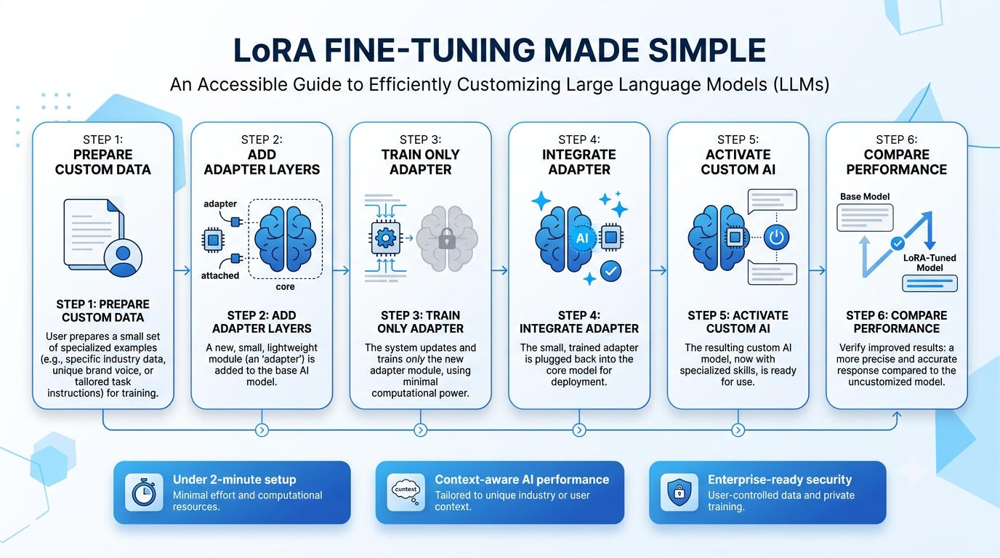
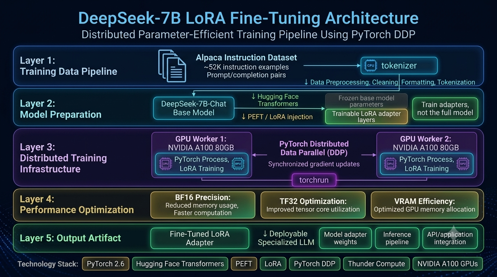

DeepSeek-7B LoRA Fine-Tuning
Parameter-efficient LLM customization using distributed GPU training
The Challenge
Large language models contain billions of parameters and require significant computational resources to customize. Traditional full-model fine-tuning is expensive, memory-intensive, and difficult to scale. The challenge was to adapt a powerful foundation model efficiently while maintaining high training performance on available GPU infrastructure.
⚡ Impact
Successfully fine-tuned DeepSeek-7B-Chat using LoRA (Low-Rank Adaptation) and PEFT (Parameter-Efficient Fine-Tuning), creating a specialized model adaptation while significantly reducing memory requirements compared with full-parameter training.
Workflow Overview

The process transforms a general-purpose language model into a specialized AI system by training lightweight adapter layers on instruction data. Instead of modifying billions of base model parameters, LoRA learns targeted adjustments that guide the model toward desired behaviors.
Key Features
Efficient Model Adaptation
LoRA enables fine-tuning by training small adapter modules while keeping the majority of the original model parameters frozen, reducing computational cost and memory usage.
Distributed GPU Training
Configured multi-GPU training across dual NVIDIA A100 80GB GPUs using PyTorch Distributed Data Parallel (DDP) to accelerate training workloads.
Performance Optimization
Applied BF16 precision and TF32 acceleration techniques to improve GPU utilization, training efficiency, and VRAM management.
Technical Architecture

The training pipeline combines instruction data processing, Hugging Face Transformers, PEFT-based LoRA adapters, and distributed PyTorch training. The architecture uses synchronized GPU workers to efficiently train the model while managing memory constraints across the distributed environment.
Engineering Highlights
The project required resolving device-mapping conflicts between Accelerate hooks and multi-process PyTorch DDP training. Careful configuration of training processes, precision settings, and GPU allocation enabled stable distributed fine-tuning across multiple A100 GPUs.
Technology Stack
Project Outcome
The fine-tuning process successfully produced a specialized LoRA adapter for DeepSeek-7B-Chat using the Alpaca instruction dataset. Training completed in approximately two hours on dual NVIDIA A100 80GB GPUs hosted on Thunder Compute. The resulting model artifacts are stored locally and serve as a reference implementation for parameter-efficient LLM customization.